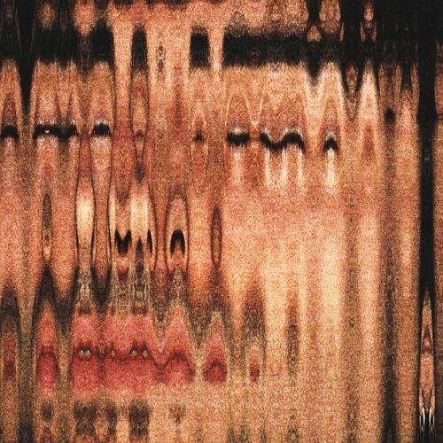

El arte de morir muy depacio. (2021)
El arte de morir muy despacio
- Introducción a la entropía
- Bienvenido al caos
- Veo tan Dentro
- Dos Adolescentes y su Primer Amor
- Parte II: La Abrazo con Fuerza
- Te Mientes a ti mismo para Ser Feliz
- Voy a Explotar
- Parte III: Muerte y Resurrección
- Fumando en mi Funeral
- Dónde Están mis Amigos
- Como todo el Mundo
Las canciones de su primera entrega como Ya No Hay Verano o Hasta que llegue la muerte, hoy acumulan millones de reproducciones. Verdaderos hits que pusieron no solo a España, sino también a buena parte de Latinoamérica, a bailar al son de sus letras. Toda aquella energía vuelve a estar muy presente en Historias Tristes para Dormir Bien, el segundo EP del músico madrileño.